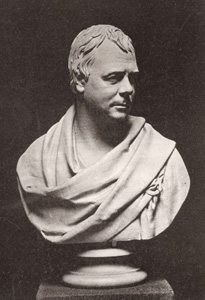
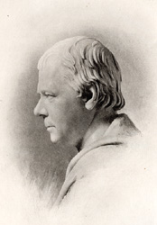

|
|
Home | Corson
Collection | Biography | Works | Image
Collection | Recent
Publications | Correspondence | Forthcoming
Events | Links | E-texts | Contact
Sir Francis Leggatt Chantrey's Bust of
Sir Walter Scott (1820)
Sir
Francis Chantrey's 1820 bust of Sir Walter Scott portrays
the author with his head turned slightly to the right and
a Lowland plaid arranged round his shoulders. One of the
most iconic and frequently reproduced images of Scott,
it was acclaimed by his friends and associates as a particularly
close likeness. For Scott's son-in-law and biographer John
Gibson Lockhart, it was 'that bust which alone preserves
for posterity the cast of expression most fondly remembered
by all who ever mingled in his domestic circle' ( Memoirs
of the Life of Sir Walter Scott, Bart., IV,
262). For J. B. S. Morritt, 'Chantrey alone has in his
bust attained that [...] most difficult task of portraying
the features faithfully, and yet giving the real and transient
expression of the countenance when animated' (quoted in
Lockhart, II, 183). James Hogg wrote that 'Sir Walter Scott
in his study, and in his seat in the Parliament-house,
had rather a dull, heavy appearance, but in company his
countenance was always lighted up, and Chantrey has given
the likeness of him there precisely' ( Domestic Manners
of Sir Walter Scott, p. 113).
|

Click
on the thumbnail for a photolithograph of Chantrey's
1820 bust of Scott
|
|
The proposal that Scott sit for a bust came from Chantrey himself.
In a letter to Sir Robert Peel (1838), Chantrey explained that
it was his 'admiration of Scott, as a poet and a man' which induced
him to approach Scott while he was visiting London in spring 1820.
It was 'the only time I ever recollect having asked a similar favour
from any one' (quoted in Lockhart, VII, 430). Scott was an admirer
of Chantrey -- he thought his statues of Robert Blair and Robert
Dundas, Lord Melville in Parliament House, Edinburgh, 'as like
the original subjects as marble can do to flesh & blood' (to
Charles William Henry Scott, 4th Duke of Buccleuch, 14 November
1818, Letters, V, 217) -- and readily agreed. Chantrey
stipulated that Scott should take breakfast with him before each
sitting and should always bring up to three friends, all good conversationists.
The bust required seven settings in March and April 1820 at which
Scott was accompanied by, amongst others, John Wilson Croker, Richard
Heber, John Fuller, and Lord Lyttelton.
| According to a memorandum by the poet Alan Cunningham
(who was Chantrey's clerk of works), Chantrey originally intended
'to seize a poetical phasis of Scott's countenance' (quoted
in Lockhart, IV, 363). He thus initially modelled Scott looking
upwards with a grave and solemn expression. Having seen the
writer in animated conversation, however, Chantrey was soon
convinced that 'a perfectly serene expression' (IV, 365) would
never capture the spirit of the man. After two sittings he
renounced his original plan and remodelled the bust in its
present pose. Arriving for his third sitting, Scott exclaimed:
'Ay ye're mair like yoursel now! -- Why, Mr. Chantrey, no witch
of old ever performed such cantrips with clay as this.' Scott
shared his enthusiasm with his wife Charlotte in a letter of
20 March 1820, judging Chantrey's bust 'one of the finest things
he ever did' and adding that it was already 'quite the fashion
to go to see it' (Letters, VI, 156). Chantrey himself
would come to regard the bust as his masterpiece. |

Click on the
thumbnail for a photogravure of a profile view
of Chantrey's 1820 bust of Scott
|
|
The original bust in plaster was completed in 1820. It is now
in the Ashmolean Museum at
Oxford University. According to Chantrey's ledger, five marble
replicas were made, the most famous of which is that at Abbotsford.
Begun in 1820, the Abbotsford bust was not completed until 1821,
when Scott gave Chantrey a number of further sittings in the course
of two visits to London. The Abbotsford bust remained in Chantrey's
studio from 1821 until 1828, and all the engravings and medallions
representing Chantrey's bust would appear to derive from it. Chantrey
offered the bust as a gift to Lady Scott while visiting Abbotsford
in May 1825. He was a welcome guest. Scott judged him 'a right
good John Bull blunt & honest & open without any of the
nonsensical affectation so common among artists' (to Jane Jobson
Scott, 16 May 1825, Letters, IX, 115) and recorded with
amusement how he had 'killd a salmon at which he was almost mad
with joy' (to Charles Scott, 13 May 1825, Letters, IX,
113). It was not until June 1828, however, that the bust was dispatched
to Scotland. According to Chantrey 'about forty-five casts'
of the Abbotsford bust were made for Scott's friends and admirers.
In addition, pirate versions were circulated 'to the extent of
thousands'.
| A second marble replica of the bust (now at Stratford
Saye) was ordered by the Duke of Wellington in September
1821. A third marble version was made for Chantrey's own
studio in 1828, for which Scott gave further sittings, and
which shows minor changes in the configuration of the face.
This version was purchased by Sir Robert Peel in 1838 and
is now in a private collection. Describing the bust to Peel,
Chantrey claimed that 'the expression is more serious than
in the two former Busts, and the marks of age more than
eight years deeper'. As a result, Lockhart in his survey
of portraits of Scott, felt that it possessed 'the character
of a second original' (VII, 429). Francis Russell, however,
in his Portraits of Sir Walter Scott (1987), is
convinced that Chantrey's account exaggerates the differences.
He judges the changes to Scott's face 'slight' and argues
that the bust differs most significantly from other versions
in the set of the plaid. The remaining two replicas were
ordered by Archibald M'Lellan in 1836 and Robert Vernon in
1838, and are now in Kelvingrove
Art Gallery and Museum, Glasgow, and the National
Portrait Gallery, London, respectively. |
Click
on the thumbnail for a photolithograph of the 1828
version of Chantrey's bust of Scott
|
|
In addition to the many casts and copies, Abbotsford bust inspired
a significant number of medallions, intaglios, engravings, lithographs,
and other derived works. Francis Russell lists medallions by W.
Bain (1822-23), William Wyon (1824), A. J. Stothard (1826), Henry
Weekes (1838), and E. Halliday (1840). The medallions themselves
inspired engravings by J. Bate (after Stothard, n.d.), Edward Lacey
(after Stothard, 1832), and Achille
Collas (after Weekes, 1838). As for engravings made directly
from the Abbotsford bust, Russell records works by James
Thomson (1831), William Holl
the Younger (1837), and George
Baird Shaw (1839). Further derived engravings were published
by Charles Picart (1824), J. T. Wedgewood (1827), and Degobert
(n.d.). In unpublished research held by Edinburgh University Library's Corson
Collection, James C. Corson records further engravings by John
Jackson (1832), Charles Burt (1854),
and R. Taylor (1871), together with lithographs by J. Granja (1840)
and John Ballantyne (n.d.).
Follow the links below for a selection of images from Edinburgh
University Library's Corson Collection:
Engravings
from the Abbotsford Bust
|
Engravings
from Medallions
|
So widely recognised is Chantrey's likeness of Scott, that when
in 1871 the Royal Mail commissioned Rosalind Dease to design a
stamp to mark the bicentenary of the writer's birth, she based
her design on the Abbotsford bust.
Bibliography
- Hogg, James. Domestic Manners
of Sir Walter Scott (Stirling: Mackay, 1909)
- Lockhart, John Gibson. Memoirs of
the Life of Sir Walter Scott, Bart., 7 vols (Edinburgh:
R. Cadell, 1837-38)
- Russell, Francis. Portraits
of Sir Walter Scott: A Study of Romantic Portraiture (London:
The Author, 1987)
- Scott, Walter, Sir.The Letters of
Sir Walter Scott, ed. H.J.C. Grierson (London: Constable,
1932-37)
In addition to the above sources, this page draws on unpublished
research by James C. Corson.
Back to Index

Last updated: 13-Jan-2009
© Edinburgh University Library
|
|